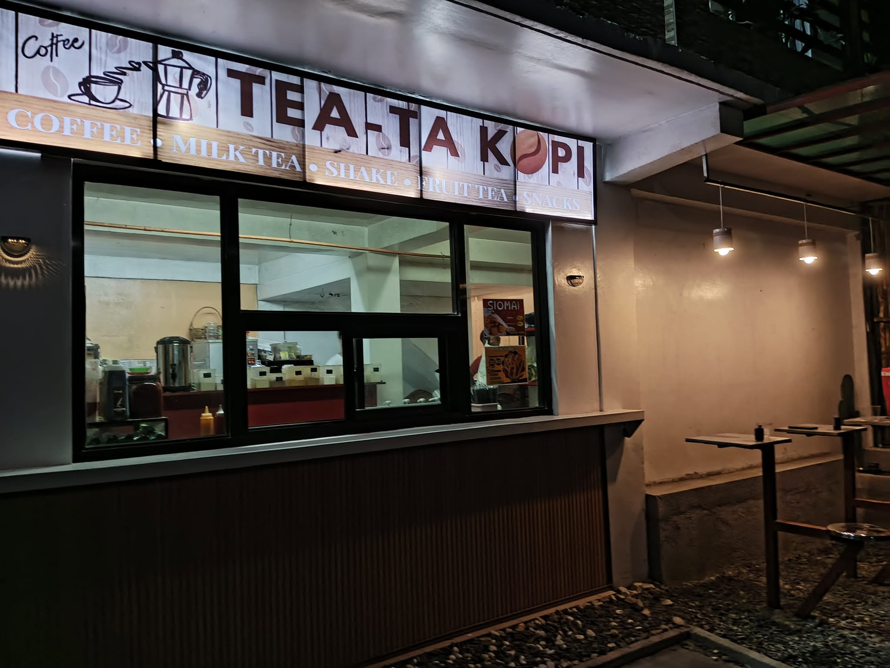
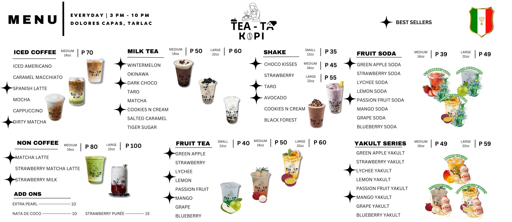
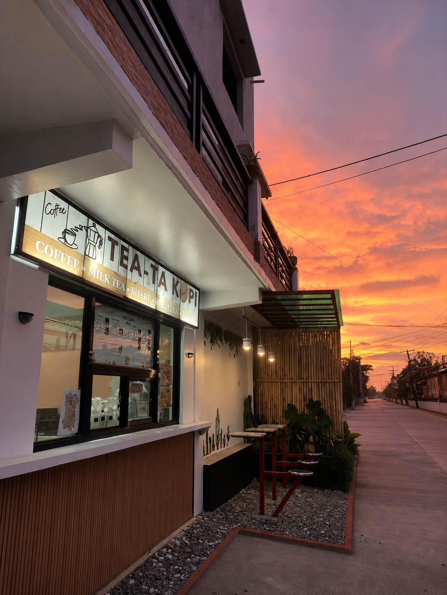

Our story
It Started Way Back in 2016
Tea-Ta Kopi began in 2016 as a small palamig store in Dolores, Capas.
At the time, things were simple. People passing by would stop to buy a cold drink before continuing on their way. There was no café or elaborate setup, just refreshing palamig for anyone looking to cool down from the heat.
As time went on, we started offering more than palamig. We added shakes, fries, and siomai, giving our customers more choices to enjoy alongside their drinks. What began as a small neighborhood store slowly became a familiar spot for people looking for something refreshing and satisfying.
For years, that little store continued serving the community while growing little by little.
Then, in 2024, things began to change.
The small palamig store grew into Tea-Ta Kopi, a café where we could offer even more. We started serving coffee, milk tea, and other drinks while continuing to offer favorites like shakes, fries, and siomai. More than just a place to grab a drink or snack, we wanted Tea-Ta Kopi to be a place where people could take their time, sit for a while, and enjoy good food and drinks together.
It may have started small, but we're proud of how far it has come.
From a simple palamig store in 2016 to the Tea-Ta Kopi you see today, we're still doing what we've always wanted to do: serve good drinks and satisfying snacks, one order at a time.
And we're happy to have you here.

The Tea-Ta We Know Today
A Little Place for a Little Break
After starting out as a small palamig store, Tea-Ta Kopi eventually grew into the café you see today.
We kept the things that made us start in the first place: refreshing drinks, simple choices, and a place that's easy to come by. Then we added more along the way, from coffee and milk tea to shakes, fruit tea, and snacks.
Whether you're dropping by to grab your usual, taking a quick break, or just looking for something to sip on, there's a little something waiting for you here.
We're still a small neighborhood café in Dolores, Capas. Nothing too fancy, and that's exactly how we like it.
Just good drinks, good company, and a place to stop by.
What we keep close
Made to order
Every cup is built fresh at the window when you order, never pre-made and left sitting out.
Prices for everyday
Most drinks are under P 80, so dropping by after class or on the way home stays easy on the pocket.
Here for the neighborhood
We open every afternoon at 3, right through 10, for the people who live and pass by Dolores, Capas.
From the shop

